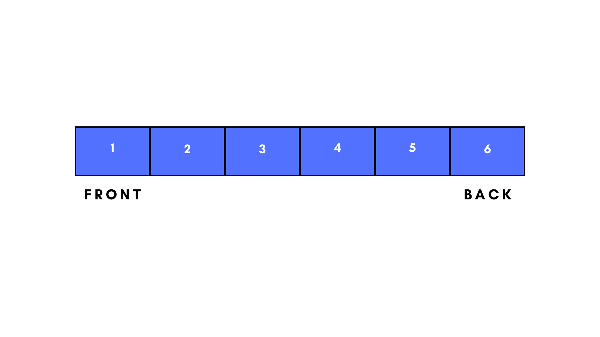

A queue is linear data structure that consists of a collection is of items that follow a first-in-first-out sequence. This implies that the first item to be inserted will be the first to be removed. You can also say that items are removed in the order they were inserted.
Using a real world example, we can compare a queue data structure to a queue of individuals standing in line for a service. Once one individual is attended to, they leave the queue for the next person to be attended to. They are helped in the order which they came.
A queue is mainly made up of two parts: the front/head and the rear/tail/back. For the purpose of clarity and consistency, we will stick to using front and back. The back is where the items are inserted and the front is the part of the queue where items are removed/deleted. Here is a diagram to help you understand better:
